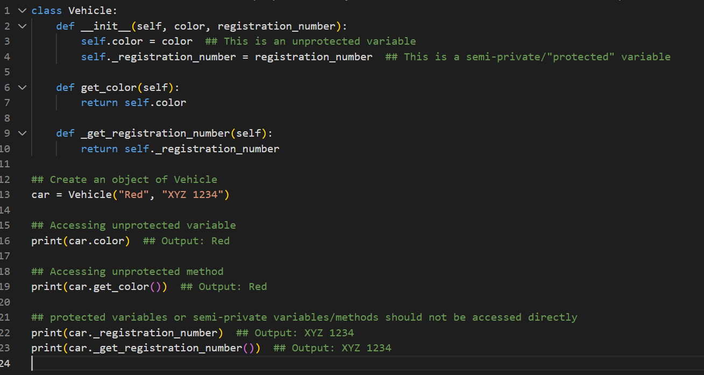

Unit 4: Applying a UML Model to a Program Implementation: UML in Practice
Unit 4: Applying a UML Model to a Program Implementation: UML in Practice
Unit 4 focuses on the practical application of UML models in programming. The unit involves experimenting with various UML models, including class diagrams, and implementing these models in Python.
Learning Outcomes
By the end of the unit, students will be able to create a class diagram for a system and implement software based on a UML model.
Relevance
The skills learned in this unit will be crucial for the summative assessment in Week 11, where students will code from the design documents submitted in Week 7.
Reflections
The introduction to Python programming and Object-Oriented Programming (OOP) has been an eye-opener for me, especially considering that my background is in a non-computer science field. I've realized how OOP has fundamentally changed my approach to coding.
In this unit, I learned the basics of object-oriented programming, its major features, abstract classes, applying inheritance, using encapsulation, and polymorphism. Initially, the concept of classes and objects was a bit abstract and challenging to grasp. To augment my understanding, I had to take additional Python courses online. As I delved deeper into the subject, I began to understand the power and flexibility that OOP offers.
One of the first concepts I learned was the idea of a 'class' - a blueprint for creating objects. I found it fascinating how classes allowed for encapsulation, where data and methods could be bundled together. This not only made the code more organized but also enhanced its reusability. Since I was using a lot of online resources, the interchangeable use of terms such as properties, attributes, and fields was initially confusing. Similarly, methods, functions, and operations were interchangeably used in my readings. I managed to get more clarity through further readings.
Inheritance was another concept that stood out to me in OOP. The ability to create a new class, a 'child', from an existing 'parent' class, while inheriting its attributes and methods, was a game-changer. It allowed for code to be reused and extended, reducing redundancy.
Overall, learning Python's OOP has been a transformative experience. It has not only equipped me with a powerful tool for problem-solving but also changed how I think about code organization and reusability. As I continue my coding journey, I look forward to exploring more advanced OOP concepts and applying them in my projects.
e-Portfolio Activity
In this code, colour is an unprotected variable, and _registration_number is a protected variable. The same applies to the methods get_color and _get_registration_number. Even though _registration_number and _get_registration_number can be accessed, the underscore prefix is a hint to the programmer that they should not be accessed directly.

References
www.tutorialspoint.com. (n.d.). Protected variable in Python. [online] Available at: https://www.tutorialspoint.com/protected-variable-in-python [Accessed 01 Feb. 2024].